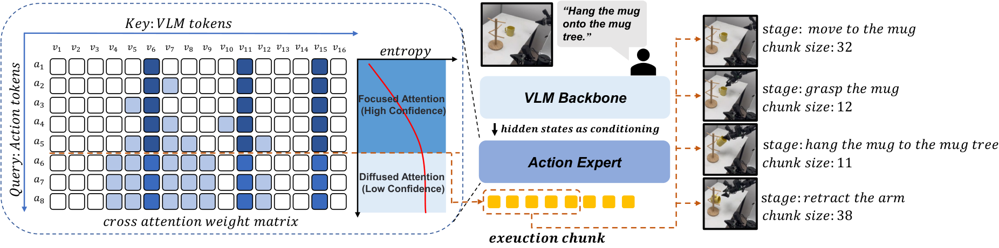
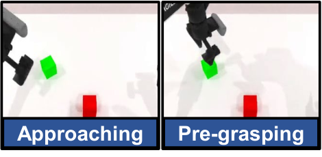
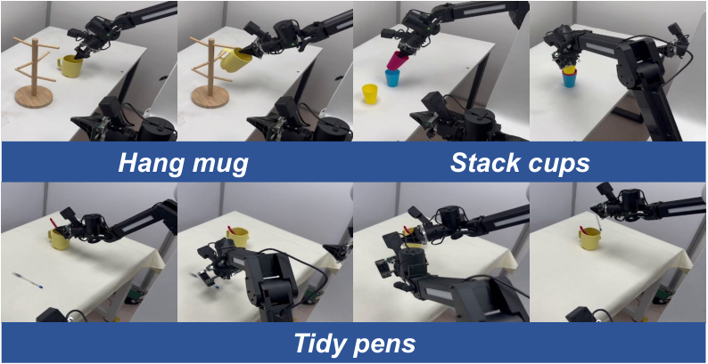

제출: 2026년 9월 4일 (v2) · Training-free · NVIDIA A100
한 줄 요약 (TL;DR)
Vision-Language-Action(VLA, 시각·언어를 입력받아 로봇 액션을 출력) 모델은 한 번 관찰에서 여러 스텝의 액션 묶음(action chunk, 예: 30~50 스텝)을 예측해 실행 속도를 얻는데, 지금은 이 묶음 길이를 태스크별로 고정한다. 저자들은 액션 토큰이 관찰(이미지·언어) 토큰을 얼마나 흐릿하게(=엔트로피 높게) 보고 있는지가 예측 신뢰도의 지표라는 점을 발견하고, 예측 도중 이 엔트로피가 지속적으로 최대치에 붙어 평평해지는 순간을 자동 감지해 그 지점까지만 실행하는 학습 불필요(training-free) 절단 규칙을 제안한다. RoboTwin 2.0에서 π0.5 백본 기준 평균 62.9%(고정 최적 61.6%), 실로봇 3태스크 평균 61.7%(고정 최적 51.7%), 오버헤드는 A100에서 <7ms.
1배경 · 문제의식
최근 VLA는 관찰 한 번에 액션 여러 개를 통째로 예측하는 action chunking을 쓴다. 예를 들어 π0.5는 한 번에 50 스텝, X-VLA는 30 스텝을 미리 뽑아낸다. 이렇게 뽑아 놓은 청크 중 몇 스텝까지 실제로 로봇에게 실행시킬지를 정하는 값이 execution horizon인데, 지금까지는 이 값을 태스크마다 사람이 수동 튜닝한 상수로 쓴다.
딜레마: 짧게 실행하면(=자주 재관찰) 반응성은 좋지만 속도가 느리고 예측 낭비가 크다. 길게 실행하면 빠르지만, 예측이 뒤로 갈수록 관찰과 어긋나 부정확해진다. 게다가 최적 길이는 태스크뿐 아니라 상태에 따라 순간순간 달라진다 — 예를 들어 컵을 잡는 순간엔 짧게, 옮기는 도중엔 길게.
저자들의 핵심 관찰: 액션 토큰이 VLM(vision-language model, 시각·언어 인코더)의 이미지·언어 토큰을 얼마나 뾰족하게 참조하는가는 앞쪽 스텝일수록 뾰족(sharp)하고 뒤로 갈수록 흐릿(dispersed)해진다. 흐릿하다는 것은 이 액션이 특정 관찰 부분에 근거하지 않고 여기저기를 균등하게 보고 있다는 뜻이고, 이는 관찰의 grounding이 약해졌음을 시사한다.
2핵심 Contribution
Cross-attention 엔트로피를 신뢰도 지표로 확립 — 액션 토큰이 관찰 토큰을 참조할 때의 attention 분포의 엔트로피(H = −Σp·ln p, 뾰족할수록 낮고 균등할수록 높음)가 예측 시점이 관찰에서 멀어질수록 상승해 ln N(균등분포 상한)에 붙어 평평해진다는 현상을 발견. 엔트로피 상위 25% 샘플은 나머지 대비 평균 MSE 10.4배, 표준편차 12.1배로 실제 예측 오류와 강하게 결합됨을 실증.
Training-free 실행 절단 규칙 — 학습이 필요 없는 두 조건: (1) 평활 엔트로피가 η·ln N을 초과하고 (2) 최근 k 스텝의 엔트로피 기울기 평균이 τ 이하로 기울기가 죽어 평평한 고원(plateau)이 형성되면 그 지점 이후의 액션은 실행하지 않는다. η=0.95, τ=0.01, k=5는 모든 태스크·모델·환경에서 고정(태스크별 튜닝 없음).
2개 VLA · 3개 벤치에서 일관된 성능·효율 이득 — π0.5·X-VLA 두 백본, RoboTwin 2.0·LIBERO·실로봇 3벤치에서 최적 고정 길이보다 항상 같거나 높은 성공률. 오버헤드는 A100에서 <7ms(비교군: multi-sampling 방식 29.5ms).
3Method
Cross-attention 엔트로피 정의
VLA의 디코더 안에서 액션 토큰 j가 VLM이 뽑은 관찰 토큰들(총 N개, 이미지 패치 + 언어 토큰)에 붙이는 attention 가중치를 층별로 평균해 확률분포 pj,·를 만든다(합=1). 이 분포의 Shannon 엔트로피
ℰj = −Σi pj,i · ln pj,i 를 그 액션 토큰의 "관찰 참조 흐릿함 점수"로 쓴다. 값의 범위는 [0, ln N] — 0이면 관찰 토큰 하나만 뾰족하게 보고, ln N이면 모든 관찰 토큰을 완전히 균등하게 본다(=아무 데도 grounding 안 됨).
직관: "이 액션은 이미지의 어디를 보고 만들었나?"의 산포도. 앞쪽 액션은 "저 컵을 보고 만들었어"(뾰족), 뒤쪽 액션은 "그냥 관성으로 계속 이렇게 가"(균등)로 갈수록 흐려진다. 흐려짐이 상한에 닿아 평평해지면, 그 이후엔 관찰이 더 이상 예측을 뒷받침하지 못한다는 신호.
왜 "고원(plateau) 검출"인가
단순히 "엔트로피가 임계값 넘으면 자름"이 아니라, 상한(ln N)에 도달해서 더 이상 오르지도 내리지도 않는 평평한 구간을 찾는 이유는 짧은 스파이크(예: 물체를 놓치는 순간 잠깐 확률이 흐트러짐)로 잘못 자르는 것을 막기 위해서다. 그래서 두 조건을 모두 요구:
조건 1 (수준): k 스텝 평활 엔트로피 ℰ̄j > η · ln N. η=0.95는 이론적 상한의 95%를 뜻함.
조건 2 (기울기): 최근 k 스텝의 엔트로피 1차 차분 절대값 평균 < τ. τ=0.01. 즉 "더 이상 오르지 않고 붙어 있음"을 확인.
두 조건을 동시에 만족하는 가장 이른 시점 j*에서 청크를 잘라 실행 horizon = j*로 삼는다. 조건 만족 지점이 없으면 사전 정의한 최대 실행 길이까지 실행.
왜 학습이 필요 없나
임계값 η, τ, k는 offline validation 데이터에서 엔트로피가 이 수준에 도달한 순간 액션 MSE가 급격히 튀는 임계점을 관측해 한 번 고정한다. 이후에는 어떤 태스크/모델/환경이라도 그대로 쓴다 — VLA의 파라미터는 건드리지 않는다.
계산 오버헤드
attention 가중치는 어차피 forward 중에 계산되므로 이를 단순 로그·평균 연산으로 재활용. 매 스텝 log·sum·비교 몇 번이라서 오버헤드가 A100에서 <7ms. multi-sampling(같은 관찰로 여러 번 뽑아 분산 재는 접근)의 29.5ms보다 4배 이상 빠름.
4실험 결과
RoboTwin 2.0 (π0.5, 10 태스크 성공률)
실행 규칙
평균 성공률
비고
Fixed chunk = 10
61.6
고정 최적
Fixed chunk = 20
~60
Fixed chunk = 30
~58
Fixed chunk = 50 (기본)
~55
π0.5 기본값
Self-Attention 기반 규칙
57.6
비교 baseline
Proposed (adaptive)
62.9
평균 선택 horizon 18.11 스텝
평균은 짧은/중간/긴 호리즌 태스크 10개의 평균. 고정된 최적값보다 +1.3%p, 태스크별 튜닝 없이 얻은 값.
LIBERO (π0.5, 4 suite 평균)
실행 규칙
Avg
LIBERO-Long
Fixed chunk = 6 (고정 최적)
94.88
baseline
Proposed (adaptive)
97.25
+4.5%p
특히 긴 호리즌 태스크(LIBERO-Long)에서 이득이 큼 — 긴 청크에서 후반부의 잘못된 액션을 자동으로 잘라내기 때문.
X-VLA (자가 attention 결합형, RoboTwin 2.0)
Fixed chunk = 30(X-VLA 기본): 76.1% → Proposed: 79.0%(+2.9%p). π0.5(디코더가 관찰과 액션 attention을 분리)뿐 아니라 self-attention이 관찰·액션을 섞어 처리하는 X-VLA 구조에서도 동일한 규칙이 작동함을 보임.
실로봇 (3 태스크: Hang mug, Stack cups, Tidy pens)
실행 규칙
평균 성공률
Fixed chunk = 30 (고정 최적)
51.7
Self-Attention 기반 규칙
55.0
Proposed
61.7
실로봇에서 격차가 더 벌어짐(+10%p) — 실환경 노이즈/미묘한 상태 변화가 많아 적응적 자르기의 이득이 시뮬레이션보다 크다.
5Ablation (주요 발견)
엔트로피 사분위 vs MSE (핵심 근거): 상위 25% 엔트로피 샘플의 액션 MSE는 하위 75% 평균의 10.4배, 표준편차는 12.1배. → 엔트로피가 실제 예측 오류를 예측하는 강한 프록시.
η(수준 임계값) 감도: η=0.90 → 너무 자주 잘라 성공률↓, η=0.99 → 거의 안 잘라 fixed와 유사. η=0.95가 안정 최적.
선택된 horizon 통계: RoboTwin에서 평균 18.11 스텝(최대 50). 즉 태스크·상태에 따라 크게 달라지고, 이 자동 선택이 고정보다 낫다는 것이 핵심.
Self-Attention 비교: 액션 토큰끼리의 self-attention 엔트로피는 cross-attention만큼 신뢰 있는 신호가 아님(RoboTwin 62.9 vs 57.6, 실로봇 61.7 vs 55.0). → "관찰과의 grounding"이 곧 신뢰도의 핵심이라는 해석을 지지.
6핵심 Figure / Table

Figure 1 — 방법 개요. 액션 토큰이 이미지·언어 토큰에 붙이는 cross-attention 분포의 엔트로피가 시간에 따라 어떻게 상승·고원(plateau)에 도달하는지, 그리고 그 고원 시작 지점을 잘라 실행 horizon으로 삼는 개념을 시각화. (출처: arXiv:2609.00908)

Figure — 엔트로피 진행 단계. 앞쪽 스텝: 뾰족(관찰에 근거), 중간: 상승, 후기: ln N 상한 근처에서 평평한 고원. Plateau 시작 지점 이후는 예측 신뢰도가 낮다는 것이 논문의 실증. (출처: arXiv:2609.00908)

Figure — 실로봇 결과. Hang mug / Stack cups / Tidy pens 3태스크에서 고정 최적(51.7%) 및 Self-Attention 규칙(55.0%) 대비 Proposed(61.7%)가 일관된 우위. (출처: arXiv:2609.00908)
핵심 표(RoboTwin 2.0) — 어떤 고정 chunk 값(10/20/30/50)도 태스크·상태에 따라 편차가 있고, adaptive가 그 편차를 자동으로 흡수해 고정 최적을 상회한다는 것이 이 논문의 주장.